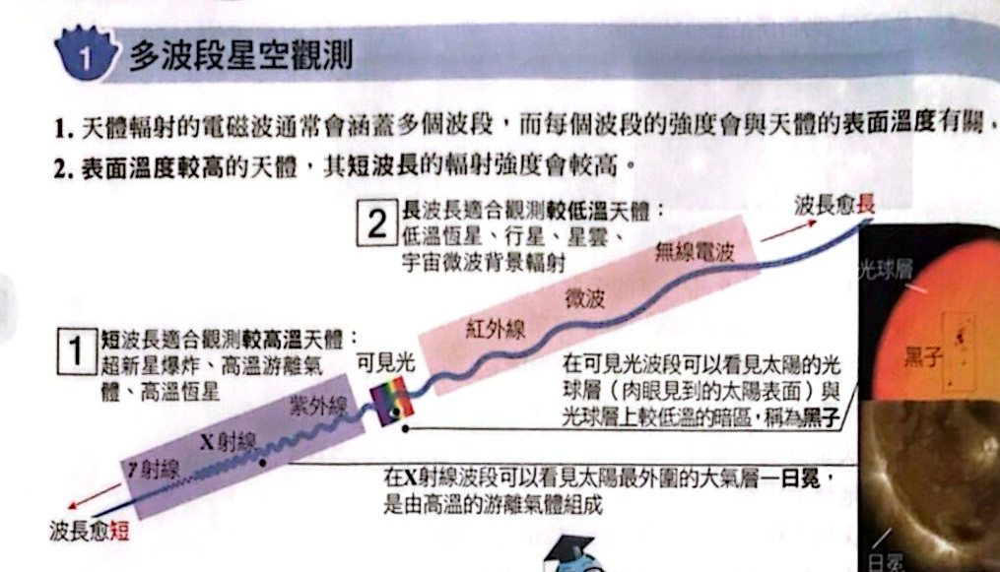
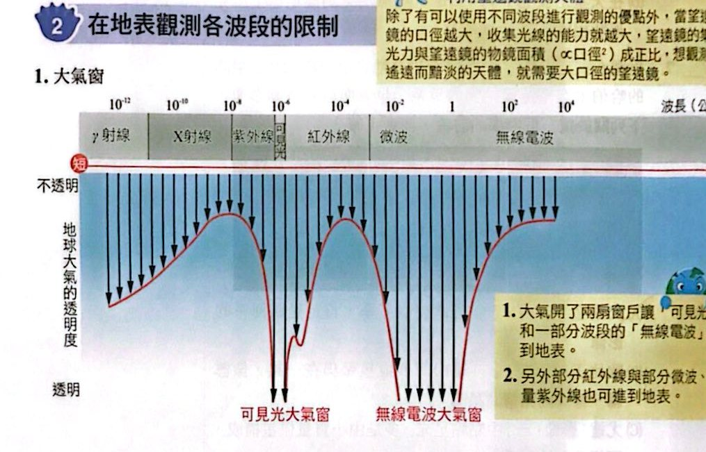

多波段星空觀測

電磁波波段與天體觀測（講義 p.44）
在地表觀測各波段的限制

大氣窗與各波段天文望遠鏡的放置位置（講義 p.44）
小試身手
小試 1在臺灣架設小型天文臺 （A～C 選一項；D～F 選一項）
看答案與詳解收起
答(B)；(F)
解這題在考什麼：在地表可以觀測的主要是可見光（紅外線需極乾燥、紫外線被大氣吸收）。地點要海拔高、乾燥、光害少、大氣擾動小。
- 望遠鏡類型：(B) 可見光望遠鏡（紫外線望遠鏡要放外太空；紅外線需要極乾燥的環境）。
- 地點：(F) 海拔 2800 公尺的鹿林山（海拔高、空氣乾淨、光害少）；捷運站附近光害大、基隆北海岸水氣多。
看答案與詳解收起
答(C) 錢卓拉 X 射線望遠鏡
解這題在考什麼：EHT 是由 8 座位於地表不同地點的長波（毫米／次毫米）望遠鏡陣列組成。
- (A) LMT 大型毫米波望遠鏡、(B) ALMA、(D) SMA 次毫米波、(E) ARO 次毫米波 ⇒ 都屬於 EHT。
- (C) 錢卓拉 X 射線望遠鏡在外太空，不屬於 EHT。
看答案與詳解收起
答(B) M31 仙女座星系
解這題在考什麼：M87 是室女座星系團中的一個巨大橢圓星系，階級＝星系。
- (A) M1 蟹狀星雲：星雲（銀河系內）。
- (B) M31 仙女座星系：星系 ✓。
- (C) M42 獵戶座星雲：星雲。
- (D) M45 昴宿星團：星團。
- (E) M92 球狀星團：星團。
看答案與詳解收起
答(D)
解這題在考什麼：愈高溫要用波長愈短的波段觀測。
- 甲：主要顯示出大小與太陽差不多的恆星 ⇒ 可見光。
- 乙：顯示星系中較大且高溫的藍色恆星（少數）⇒ 紫外線。
- 丙：可拍出星系中冷到可以讓分子存在的星雲分布 ⇒ 無線電波（低溫）。
- 丁：可拍出高溫游離氣體的分布 ⇒ X 射線。
選項 (D)：可見光、紫外線、無線電波、X 射線。
看答案與詳解收起
答(B)(E)
解這題在考什麼：羅曼太空望遠鏡主鏡 2.4 公尺（與哈伯相同），但單位時間觀測視野比哈伯大 100 倍；兩者都在大氣層外；羅曼預計位於地球背對太陽那一側（離地表約 160 萬公里）並與地球一起繞日公轉。
- (A) ✗ 視野相差 100 倍，單張影像天球範圍不同。
- (B) ○ 羅曼視野大 100 倍，可用更少的觀測時間捕獲更多天體影像。
- (C) ✗ 羅曼是為了尋找暗能量、暗物質、太陽系外行星，不是研究太陽。
- (D) ✗ 哈伯繞地球軌道運行，有時被地球遮住；羅曼位置雖不會被地球遮住，但被日、地遮住的區塊會不斷改變，無法對全天球每個區塊不間斷觀測。
- (E) ○ 兩者都在大氣層外，不受大氣擾動與散射光的干擾。
看答案與詳解收起
答(D) X 射線望遠鏡，在范艾倫輻射帶外
解這題在考什麼：10000 度到 1000 萬度的氣體 ⇒ 輻射主要在短波長（X 射線）；X 射線被大氣吸收，必須放外太空；而范艾倫輻射帶本身會放出 X 射線，會干擾觀測，所以要放在輻射帶之外。
- (A) 紫外線望遠鏡在夏威夷高山 ✗（紫外線被大氣吸收）。
- (B) X 射線望遠鏡在范艾倫輻射帶中 ✗（會放出 X 射線，干擾觀測）。
- (C) 紅外線望遠鏡在冰帽上 ✗（波段不符）。
- (D) ✓
- (E) 可見光望遠鏡在智利沙漠 ✗（波段不符）。